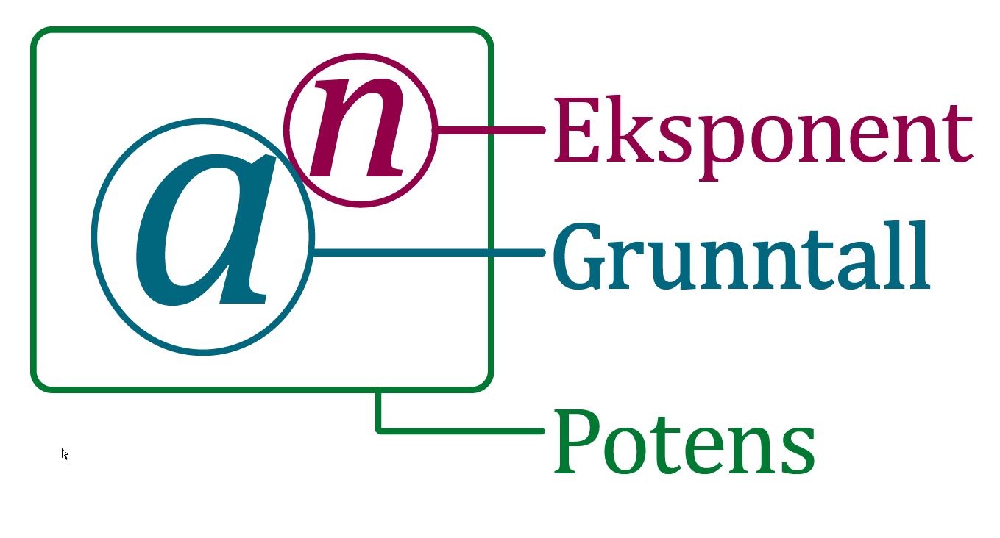

Potenser
Contents
Potenser¶
Du skal kunne
regne med de ulike potensreglene forenkle uttrykk der potenser inngår En typisk oppgave som du skal kunne svare på er følgende (tatt fra eksamen i Matematikk 1 T):
Skriv så enkelt som mulig uttrykk på formen
Hva er en potens?¶
Dersom vi skal oppgi avstanden mellom jorden og månen vil det være litt tungvint å skrive dette på «vanlig» måte som
150 000 000 000 meter.
Vi kan i stedet tenke oss at dette kan skrives som
Men dette er også litt tungvindt. Vi innfører derfor skrivemåten
Avstanden mellom sola og jorda kan derfor skrives som \(1,5\cdot 10^{11}\).
Generelt har vi at dersom \(a\) er et reelt tall og \(n\) et helt tall, så er
der det altså er \(n\) \(a\)-er som multipliseres.
Vi kaller \(a^n\) for en potens. Tallet \(a\) kaller vi for potensens grunntall og \(n\) >kaller vi for potensens eksponent.
{kind=link}
Potensen til en potens¶
Så langt har du sett at du har to potensregler som vist i rammen til høyre. Du kan opphøye et tall i et positivt helt tall \(n\) og få et nytt tall.
Men hva får du om du opphøyer en potens i en eksponent? Hva blir for eksempel \( (5^3)^4\)? Dette kan du skrive slik:
Generelt har vi:
Potensregler
Regel 1: \(a^n\cdot a^m = a^{n+m}\)
Regel 2: \( \displaystyle{\frac{a^n}{a^m} = a^{n-m}}\)
Regel 3: \({\left( {{a^n}} \right)^m} = {a^{n\, \cdot \,m}}\)
Hva tror du \(3^0\) er?
Når eksponenten ikke er et naturlig tall¶
Før du ser filmen nedenfor, vil vi at du skal gjøre følgende oppgave:
Oppgave
a) Forklar hvorfor \( (5\cdot 7)^4 = 5^4\cdot 7^4 \)
b) Forklar hvorfor \( \left( \frac{2}{3}\right)^4 = \dfrac{2^4}{3^4}\)
c) Hva blir \( \left( a\cdot b\right)^n\)?
d) Hva med \( \left( \dfrac{a}{b}\right)^n\)?
Du kan bruke potensreglene til å forenkle en del uttrykk, slik som følgende eksempel viser.
Eksempel
Skriv så enkelt som mulig
$$\dfrac{a^4\cdot (2a)^3}{a^3}$$
Løsning:
Vi legger først merke til at regelen \((a \cdot b )^n = a^n\cdot b^n\) gir oss \( (2a)^3=2^3\cdot a^3 = 8a^3\). Vi får derfor:
Potensreglene
To definisjoner:
Definisjon
$$ a^{-n}=\dfrac{1}{a^n}
Rasjonale eksponenter¶
Her skal du lære om
n-te røtter
potenser med rasjonale eksponenter
Dette vil vise seg å være to sider av samme sak.
Du skal også lære hvordan man kan forenkle uttrykk med kvadratrøtter.
Oppgave 1
Et kvadrat har areal lik 36. Hvor lange er da sidene i kvadratet?
N-te-roten av et tall¶
Dersom du skal regne ut arealet av et kvadrat med side 3 kan du regne ut \(3\cdot 3=3^2\) og får \(9\) som svar. Men hva skal du gjøre om du vet hva arealet er, men ikke hvor lange sidene er? La oss si at arealet er 16 m². For å finne sidene må du altså finne et tall \(a\) slik at \(a^2=16\). I dette tilfellet ser du at \(a=4\) passer bra. Vi kaller tallet \(a\) som er slik at \(a^2=b\) for kvadratroten av \(b\):
Å ta kvadratroten av et tall svarer til å opphøye tallet i \(\frac 1 2\). Dette kommer at vi ønsker at potensregelen
skal gjelde også når vi har eksponenter som ikke nødvendigvis er heltall. Vi får nemlig at
Definisjon
Generelt definerer vi n-te-roten av et positivt tall \(a\) til å være det positive tallet \(b\) som er slik at \(b^n=a\). Det vil si at
I videoen nedenfor vil du lære mer om dette.
Rotregning¶
Ofte så ønsker vi å skrive matematiske uttrykk så enkelt som mulig. Nå skal vi se på hvordan vi kan forenkle rotuttrykk som for eksempel: \(\sqrt{32}-\sqrt{50}+\sqrt{8}\).
Vi kan bruke at \(\sqrt{a\cdot b}=\sqrt{a}\cdot \sqrt{b}\) (hvorfor gjelder denne regelen egentlig?)
La oss prøve å løse oppgaven over:
Legg merke til at det første vi gjorde var å faktorisere tallene inne i rottegnene. Dersom den ene faktoren blir et kvadrattall, så har vi mulighet til å forenkle uttrykket.
Nå kan du prøve deg på denne oppgaven:
Oppgave 1
Forenkle \(\sqrt{27}-\sqrt{12}\).
To potensregler
Vi har potensreglene
Spesielt har vi at
Oppsummering potensreglene¶
Her er regnereglene for potenser
\( a^n \cdot a^m = a^{n+m}\)
\(\dfrac{a^n}{a^m}= a^{n-m}\)
\( (a^n)^m = a^{n \cdot m} \)
\((a \cdot b )^n = a^n\cdot b^n \)
\(\left(\dfrac{a}{b}\right)^n = \dfrac{a^n}{b^n}\)
To definisjoner fra tidligere
\( a^0=1 \) \( a^{-n}=\dfrac{1}{a^n}\)
En ny definisjon
\( \sqrt[n]{a}=a^{\frac{1}{n}} \)
Det betyr at
\[a^{\frac{m}{n}}=\sqrt[n]{a^m}=\left( \sqrt[n]{a} \right)^m\]